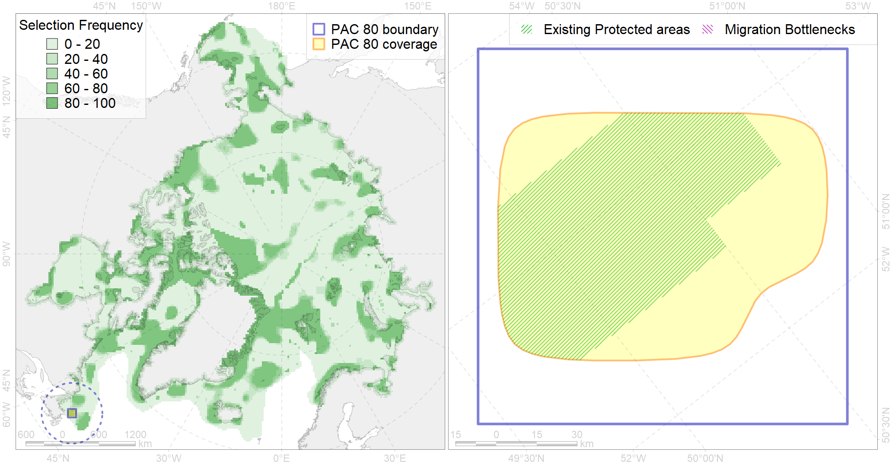

Region 80
Region 80
“ArcNet” scenario 33 achievement for region 80.
Use Accenter for advanced mode.

0
CFs inside of Region completely
0
CFs inside of Region at quarter
0
Complete-targets achievement by Region
0
Half-targets achievement by Region
| CF | Name | Target Achievement for Region | Proportion of Target Achievement in Region | Amount Proportion in Region |
|---|---|---|---|---|
| 2030 | Hooded seal wheling areas in the Front region | 15.3% | 15.1% | 6.9% |
| 5038 | Blue whale summer feeding areas in the Northwest Atlantic | 16.8% | 10.6% | 4.8% |
| 5060 | Humpback whale summer feeding areas in the Northwest Atlantic | 13.7% | 6.3% | 3.8% |
| 5050 | Fin whale summer feeding areas in the Northwest Atlantic | 11.1% | 5.9% | 3.4% |
| 7145 | III.2.1.4. Ungava -Labradoran shelf | 47.5% | 6.4% | 2.5% |
| 4080 | Fish zoogeography, Deepsea Atlantic Region, North-Atlantic Abyssal Province (11A -Scandian, 11B - Central-Arctic and 11C - Baffin Deep-sea Districts ) | 37.5% | 6.6% | 2.3% |
| 3023 | Marginal Ice Zone distribution in April in the Labrador Sea LME | 13.0% | 3.8% | 1.8% |
| 4028 | Feeding/migration area of the Atlantic salmon (Salmo salar) American populations (F27) | 5.8% | 1.9% | 0.8% |
| 4056 | Distribution of the American Plaice (Hippoglossoides platessoides) (F 47), European populations | 18.1% | 1.2% | 0.6% |
| 2019 | Harbour seal range in the North Atlantic region | 7.5% | 1.1% | 0.5% |
| 6076 | Common murre (Uria aalge aalge) wintering grounds | 2.4% | 1.3% | 0.5% |
| 4049 | Range of the Haddock (Melanogrammus aeglefinus) (F 42) | 6.9% | 1.1% | 0.5% |
| 6049 | Black-legged kittiwake (Rissa tridactyla tridactyla) wintering grounds | 1.1% | 1.1% | 0.4% |
| 6034 | Ivory gull (Pagophila eburnea) Atlantic wintering grounds | 1.0% | 0.5% | 0.2% |
| 4046 | Range of the Thorny Skate (Amblyraja radiata) (F 3) | 3.0% | 0.6% | 0.2% |
| 4045 | Feeding/migration area of the Pink Salmon (Oncorhynchus gorbuscha), native distribution (F23) | 3.2% | 0.5% | 0.2% |
| 4059 | Range of the Greenland Halibut (Reinhardtius hippoglossoides) (F 49) | 6.3% | 0.5% | 0.2% |
| 6083 | Thick-billed murre (Uria lomvia lomvia) wintering grounds | 0.7% | 0.5% | 0.2% |
| 4003 | Range of the Atlantic Capelin (Mallotus villosus) (F10) | 5.7% | 0.5% | 0.2% |
| 4017 | Feeding/ migration area of the Greenland Shark (Somniosus microcephalus) (F1) | 0.7% | 0.4% | 0.2% |
| 9005 | polar bear of the DS (Davis Strait) subpopulation distribution | 0.3% | 0.2% | 0.1% |
| 6041 | Ivory gull (Pagophila eburnea) postbreeding grounds in the Canadian Arctic | 0.1% | 0.0% | 0.0% |
| 4055 | Range of the Shorthorn Sculpin (Myoxocephalus scorpius) (F 46), American populations | 0.1% | 0.0% | 0.0% |